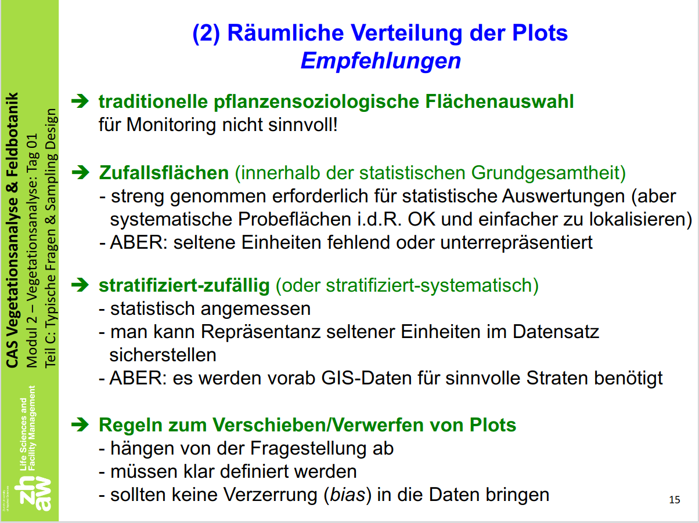
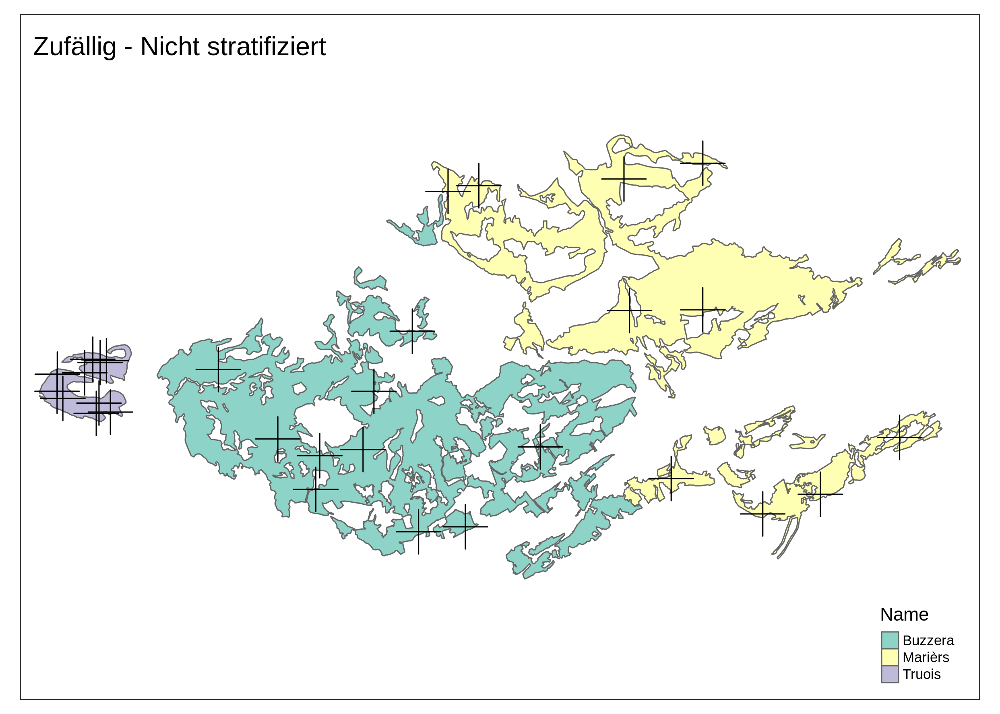
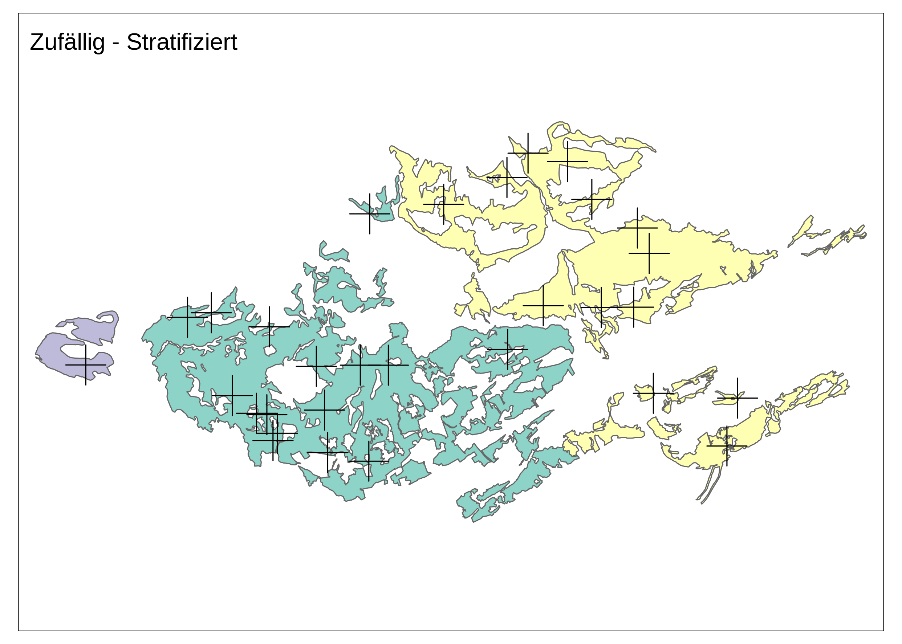
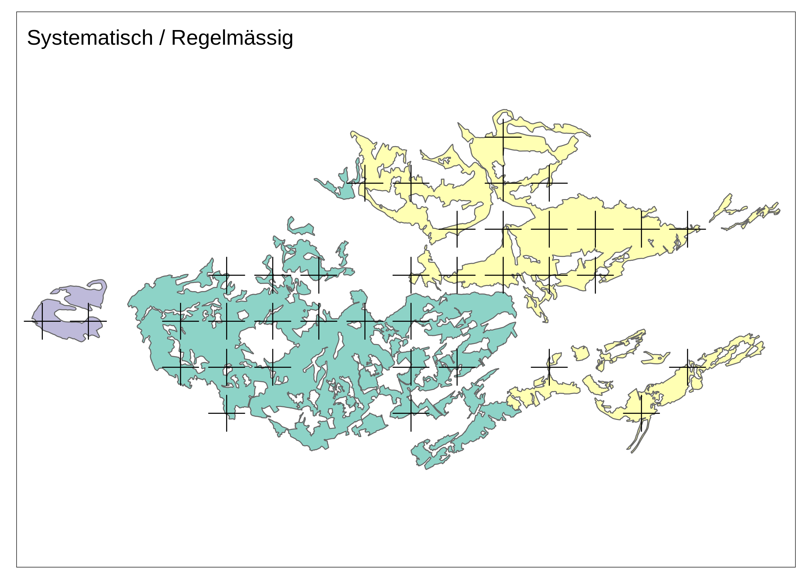
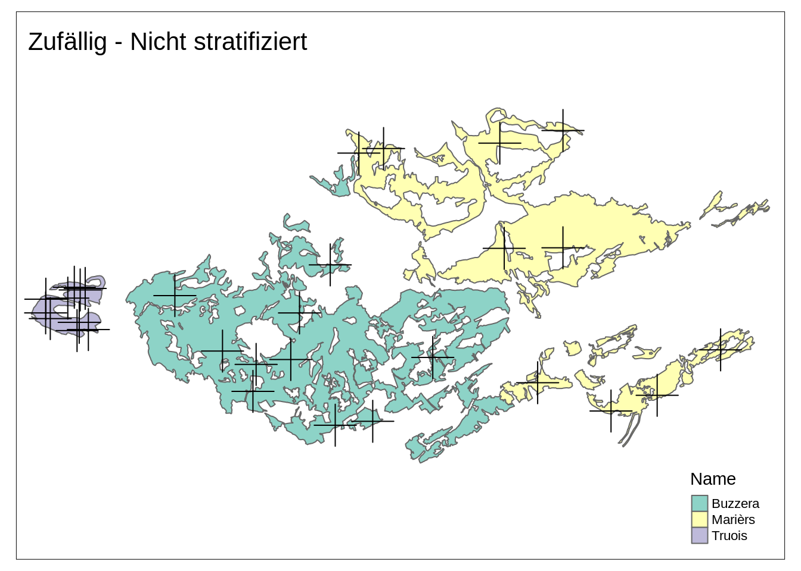
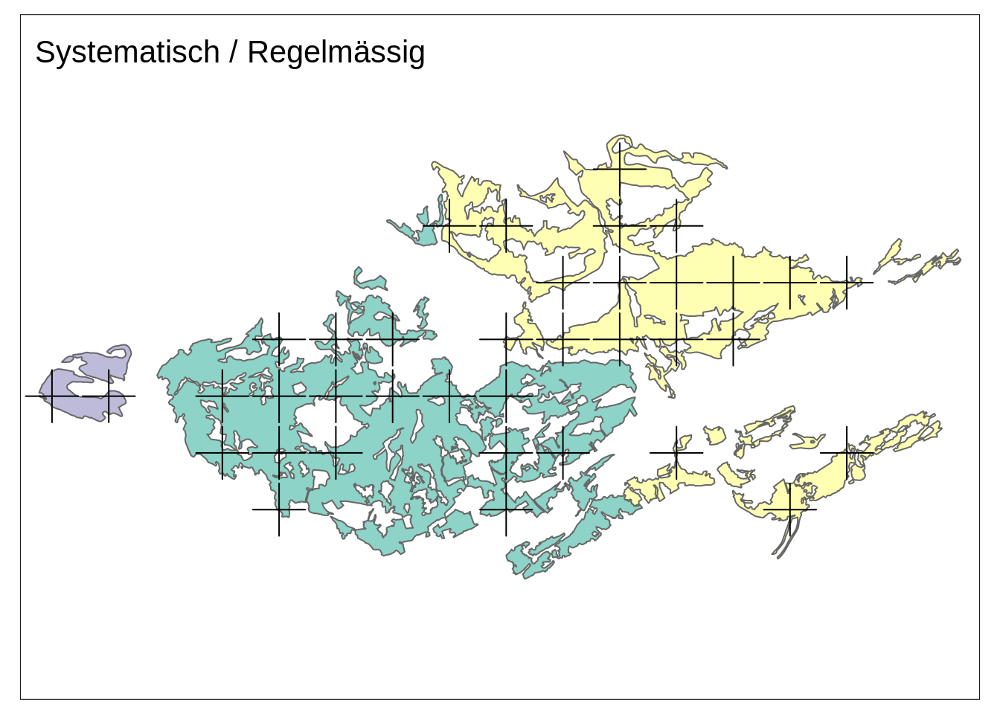

library("sf")
library("terra")
library("tmap")
tmap_mode("plot")
set.seed(1920)Übung 6
Sampling Design
R eignet sich hervorragend um ein Sampling Design umzusetzen. Am ersten Tag des CAS habt ihr etwas zu Sampling Design gelernt (siehe Abbildung 6.2).
Folie Sampling Design

Schauen wir uns folgende Sampling Strategien an:
- zufällig
- nicht stratifiziert (siehe Abbildung 6.2 (a) und Zufällig - Nicht stratifiziert)
- stratifiziert (siehe Abbildung 6.2 (b) und Zufällig - Stratifiziert)
- systematisch / regelmässig (siehe Abbildung 6.2 (c) und Systematisch / Regelmässig)



Vorbereitung
tww <- read_sf("data-original/TWW/TWW_LV95/trockenwiesenweiden.shp")
1filter <- c("Marièrs", "Buzzera", "Truois")
tww <- tww[tww$Name %in% filter,]
2tww <- tww[, "Name"]
3tww$area_ha <- as.numeric(st_area(tww))/10000
4samples_total <- 30
5base_plot <- tm_shape(tww) +
tm_polygons(col = "Name") +
tm_layout(legend.show = FALSE, asp = 7/5)- 1
- Nur 3 Lokaliäten auswählen
- 2
- Nur die Spalte “Name” (=Lokalität) behalten. Die Geometrie Spalte kommt automatisch mit.
- 3
- Fläche berechnen und in Hektaren umrechnen (als Vorbereitung für die das stratifizierte Sampling)
- 4
- Variabel erstelen für die Summe an Samples, die wir machen können / wollen
- 5
- Optional: Da wir immer wieder die gleiche Karte machen, können wir eine Basis Karte erstellen und immer wieder benutzen.
Zufällige Verteilung
Für die zufällige Verteilung der 30 Samples, gibt es zwei Möglichkeiten: (1) Nicht stratifiziert und (2) Stratifiziert. In jedem Fall brauchen wir eine Spalte mit der Anzahl der Samples für die jeweilige Lokalität:
1tww$nicht_stratifiziert <- samples_total/nrow(tww)
2tww$stratifiziert <- round(samples_total/sum(tww$area_ha)*tww$area_ha)- 1
- Nicht stratifiziert: In jeder Lokalität gleich viele Samples (\(\frac{30}{3}= 10\))
- 2
- Stratifiziert: Samples in Relation zur Fläche (\(A\)) verteilen (\(\frac{30}{\sum \text{A}} \times \text{A}\))
knitr::kable(tww)| Name | geometry | area_ha | nicht_stratifiziert | stratifiziert |
|---|---|---|---|---|
| Marièrs | MULTIPOLYGON (((2822107 119… | 240.5064 | 10 | 13 |
| Buzzera | MULTIPOLYGON (((2820384 118… | 305.1896 | 10 | 16 |
| Truois | MULTIPOLYGON (((2815810 118… | 20.1714 | 10 | 1 |
Zufällig - Nicht stratifiziert
sample_plots1 <- st_sample(tww, size = tww$nicht_stratifiziert)
nicht_stratifiziert_plot <- base_plot +
tm_shape(sample_plots1) +
tm_dots(shape = 3, size = 3) +
tm_layout(title = "Zufällig - Nicht stratifiziert", legend.show = TRUE)
nicht_stratifiziert_plot

Zufällig - Stratifiziert
sample_plots2 <- st_sample(tww, size = tww$stratifiziert)
stratifiziert_plot <- base_plot +
tm_shape(sample_plots2) +
tm_dots(shape = 3, size = 3) +
tm_layout(title = "Zufällig - Stratifiziert")
stratifiziert_plot
Systematisch / Regelmässig
sample_plots3 <- st_sample(tww, size = samples_total, type = "regular")
systematisch_plot <- base_plot +
tm_shape(sample_plots3) +
tm_dots(shape = 3, size = 3) +
tm_layout(title = "Systematisch / Regelmässig")
systematisch_plot

Übung
(Open End und ohne Musterlösung)
- Wähle einen kleineren Kanton oder eine Gemeinde aus
- Selektiere die TWW Standorte dieser Gemeinde / dieses Kantons
- Wähle ein sinnvolles Sampling Design und setze es mit R um
- Extrahiere die Höhenwerte für jeden Sample
- Visualisere in einer Karte:
- die TWW Flächen
- Gemeinde- / Kantonsgrenze
- Sampling Standorte
- Swissimage Hintergrund Karte
- Nordpfeil, Scalebar